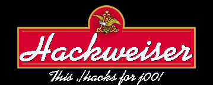

yeah, hackweiser is fucking .br!
well, later securenet's hack, here is the first word of psaux.
h1 dudes.
i'm here once more to say to you.
i think you don't like me. heh. maybe cause i hacked securenet. hm? i don't think so. i think you have another reason. maybe cause i'm brazilian, but i know 99%
of brazilians are lame. and i say this to all!
why are brazilians first in defacements?
it's not cause brazil has hackers, it is cause brazil has many active script kiddies.
they don't have security/system operational skill. they only know how to run exploits. don't understand the vulnerability. they doesn't know shit.
when i say "brazilian hackers", i use " ", cause i'm being *ironic* with defacers groups from brazil. you don't understand, cause you are a pig.
i want send fuck you to the "unicode man" from silver lords, called scorpionktx. heh. dude, why are you stupid? your friends use wu-g0d and t666, while you're
using unicode !#!# wtf! you said i used wu 2.6.0 exploit on securenet. omg! that's stupid. is that all you know? where's your skill? fuck you lame. you
don't know me, so, shut up please.
a few messages to furia.br's leader: papa-tudo, forget me, cause i can fuck your life. heh. do you can see?
securenet, forget me too. so, i'll give work to you.
insecurenet, well, i don't know if you know, but i got id=0 in your box. if you put any more shit about me, i'll deface you soon and delete your files.
thanks to the death knights. i respect you.
EOF